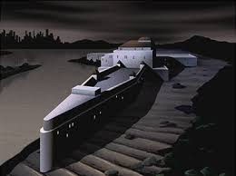

Were was the Batfamily puts the supervillains when they are in a jail cells
The Joker, Harley Quinn, Poison Ivy, Scarecrow, Two-Face, Riddler, Victor Zsasz, Mad Hatter, Clay Face, Mr. Freeze, Killer Croc, Man Bat, Killer Moth, are all held in Arkham Asylum. As for The Penguin, Catwoman, The Riddler when deemed sane enough for trial, Deadshot, Bane, and the Mob bosses and common thugs are all held in Blackgate Penitentiary. So the total from the first page is now 17 villians some mob bosses and their thugs that the Bat _family has to deal with nightly or when ever the supervillains braek out of Arkham Asylum or Blackgate Penitentiary.
the Arkham Asylum prisson

The Arkham Asylum is a prisson were Batman holds his insaen villains. Sometime there are other villains that are held in Arkham Asylum are villians such as The Joker, Harley Quinn, Poison Ivy, Scarecrow, Two-Face, Riddler, Victor Zsasz, Mad Hatter, Clay Face, Man Bat, Killer Moth, and Catwoman who occasionally but also appears in Arkham. As for Mr. Freeze who is held in Arkham not because he is insane but because it is the one place that has a cryo-cell for him to continue living and not die. Killer Croc who is often in a specialized habitat.
the Blackgate_Penitentiary prisson
Blackgate Penitentiary is a prisson for the sane villians. The villians that are held there are Penguin, Catwoman, The Riddler when deemed sane enough for trial, Deadshot sometimes sent to Belle Reve, but also appears in Blackgate, Bane who has been held in both Arkham and Blackgate prissons, and the Mob bosses and common thugs.